| 日付 | 2009年12月19日（土） |
|---|---|
| 山域 | 丹沢 |
| メンバー | グループ（男5女4） |
| 山行形態 | 日帰り |
| アクセス | 電車、バス |
| ルート (Map) | ヤビツ峠→三ノ塔→塔ノ岳→大倉 |
丹沢の山に行きたいという話があったので、丹沢の名峰・塔ノ岳に行くことにする。
コースはヤビツ峠からの丹沢表尾根で、登山を始めたときに通った懐かしいルートだ。
8:21 ヤビツ峠バス停到着。標高760m。
最初は車道歩き。人気の高いこのルートもさすがにこの時期だと比較的すいている。
それでもバスは満員で座ることはできなかった。
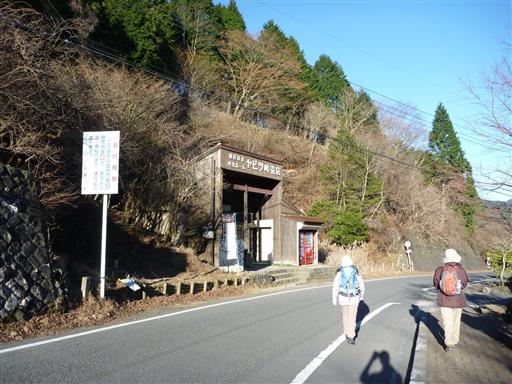
富士見山荘に到着。こんなところにも売店が開いている。
この辺りから登山道が始まる。
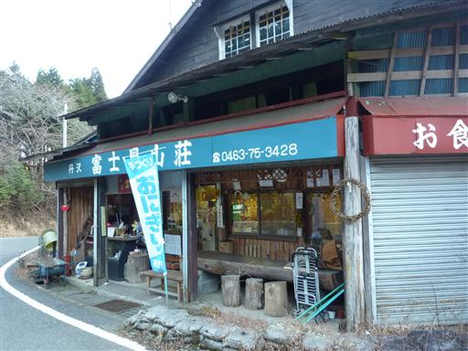
今日も冬型の気圧配置で、寒いが天気は快晴。
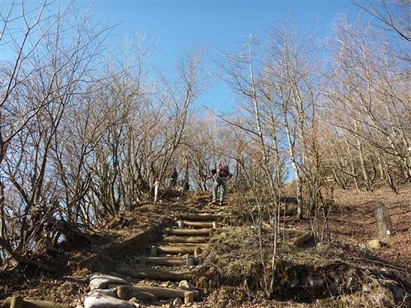
振り返ると三角錐の整った形の大山が一際目立っている。
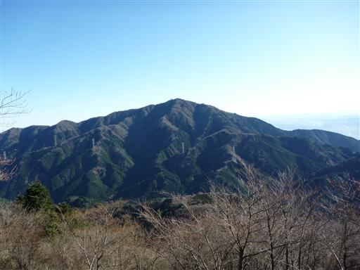
まだ太陽が低いからか、海が陽に照らされて光っている。
大島やその向こう側にもいくつかの島が見えている。
今日は本当に空気が澄んでいる。
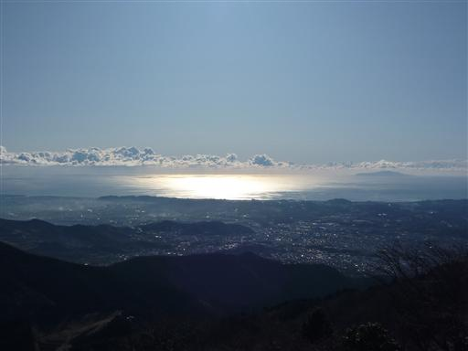
当然近くにある富士山もくっきりと見えている。
丹沢からは何度か富士山を見ているが、こんなに大きかったかと驚かされる。
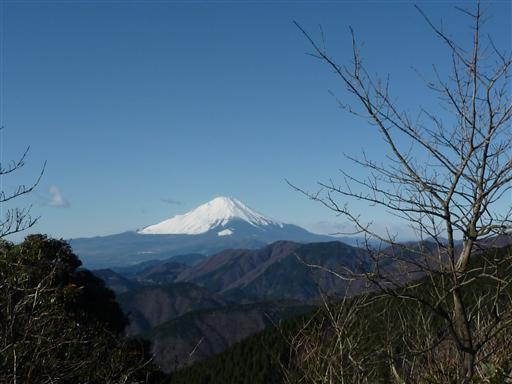
左に目を振ると、箱根や愛鷹山、遠くには伊豆の山々も見える。
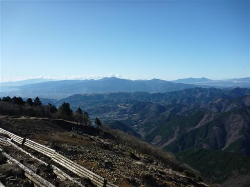
三ノ塔に到着。ここで丹沢の視界が一気に開ける。
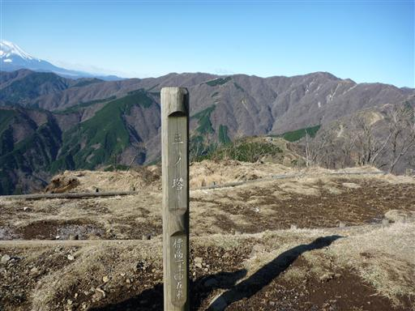
ここからの景色はお気に入り。
真ん中の塔ノ岳山頂まで、丹沢表尾根がジグザグに走っているのが見える。
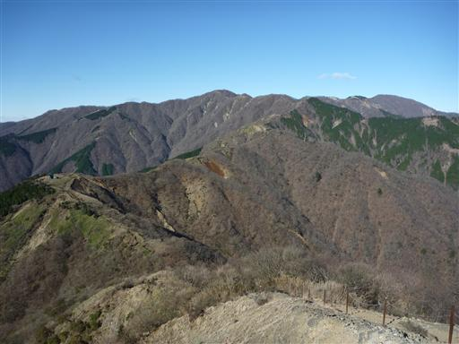
海の上に大島が船のように浮かんでいる。
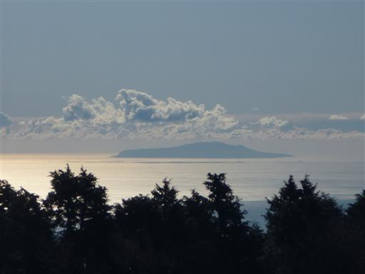
一旦下って再び登りに入る。丹沢表尾根はいくつもの小ピークが連なる。
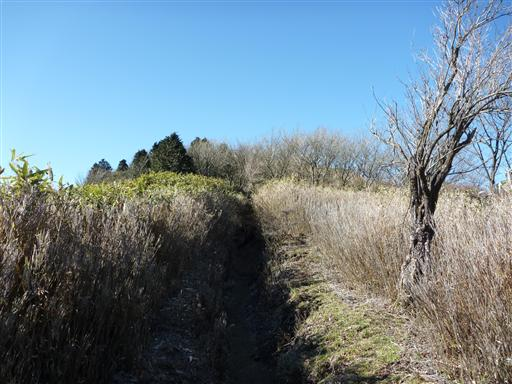
烏尾山に到着。烏尾山荘が営業しているところを初めて見た。
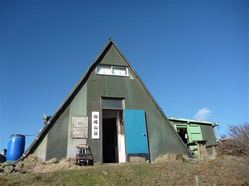
道端に木彫りの不思議な像が置かれている。
誰が置いたのか分からないが、風が吹いたらどこかに吹き飛ばされそうだ。
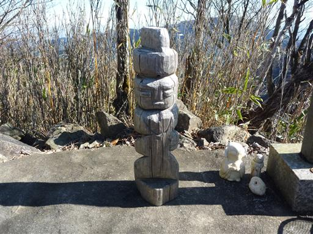
ガレた斜面が出てきて丹沢らしい風景が広がってくる。
丹沢の山々は奥多摩や奥武蔵に比べるとはるかに険しい。
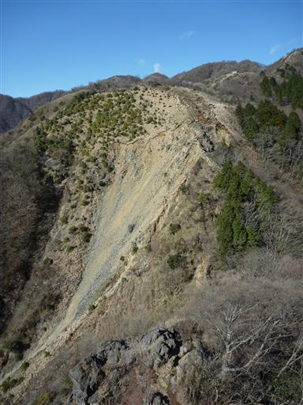
鎖場を通過する。このコース最大の難所だ。
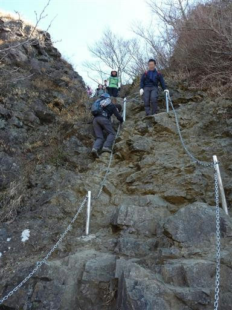
崩れ落ちそうな狭い稜線には木の階段が設けられている。
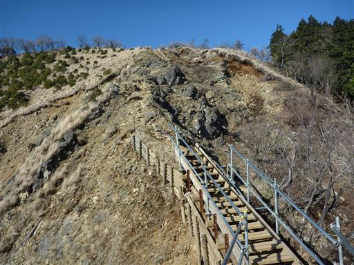
今日は寒気が南下していて非常に寒い。
朝は相当冷えたのか、霜柱があちらこちらで見られる。
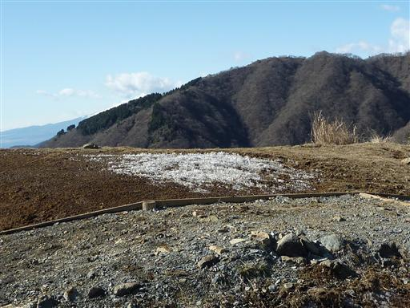
昼に近づいて気温が上がってくると、霜柱が解けて、多くの登山者が踏みつけ
登山道は泥だらけになっている。東丹沢に来るといつもそうだが、靴が泥だらけだ。
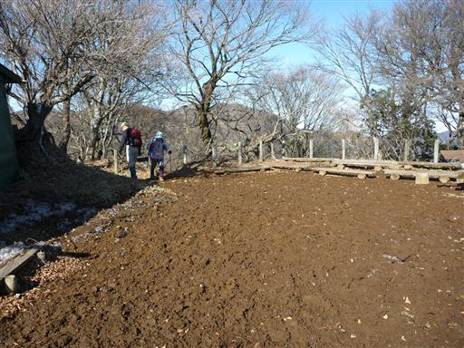
長い尾根を歩いていくと、ようやく目の前に塔ノ岳の山頂が見えてくる。
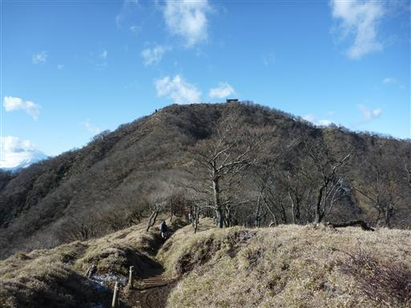
12:18 塔ノ岳山頂到着。標高1491m。
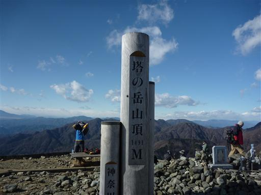
今日の塔ノ岳は山頂も良く晴れている。
富士山は雲がかかってきているが、展望は抜群だ。
遠く筑波山や房総半島まで見渡せる。
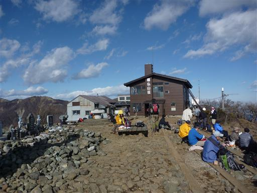
山頂で昼食をとっていると立派な角を持つ鹿が出現。人間に食べ物をねだっている。
野生生物に餌をあげてはいけないという注意はだいぶ根付いているようで、
鹿に餌をあげようとする人は少ない。
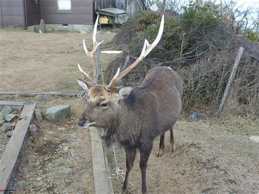
1時間ほど山頂に滞在し、下山は大倉尾根を下る。
この尾根は歩き飽きているので、できれば選択したくは無かったが
他に適当なルートも無いので、無難なこのルートを選ぶ。
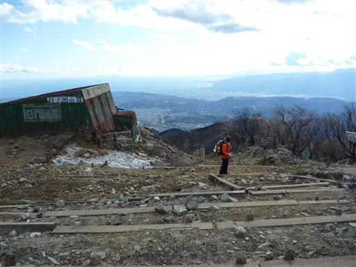
相模湾を眺めながらの下山はなかなか爽快だ。
午後になって山頂上部はだいぶ雲が出てきたが、
それでも丹沢で午後にこれだけ晴れているのは珍しい。
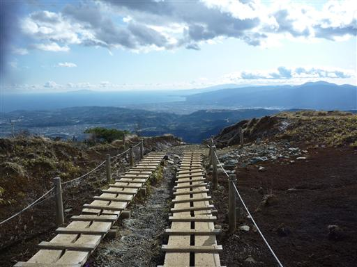
尾根の途中にある山小屋の入口に「猛人に注意」と書かれている。
今まで何度も大倉尾根を歩いたが、初めて気付いた。
残念ながらこの小屋は今まで一度も利用したことが無い。
どんな主人が経営しているのだろう？
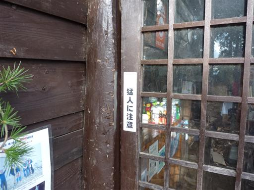
下山。わずかな車道を歩いていく。
車道歩きがほとんど無いのがこのコースの利点だ。
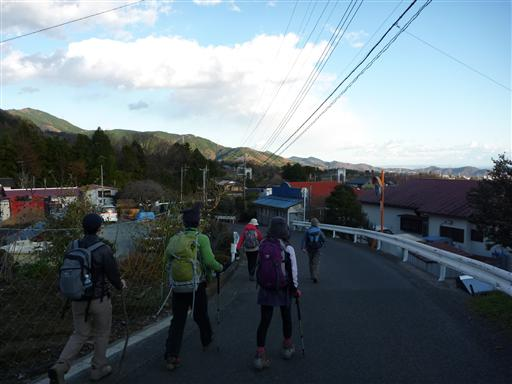
15:39 大倉バス停到着。標高285m。
今回は登山を始めたときと全く同じコースを歩いてみたが、
当時と変わらず良いコースだった。
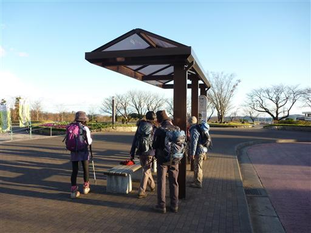
渋沢駅から近くの温泉に寄って帰ることにする。
大山が夕日を浴びて真赤に染まっている。
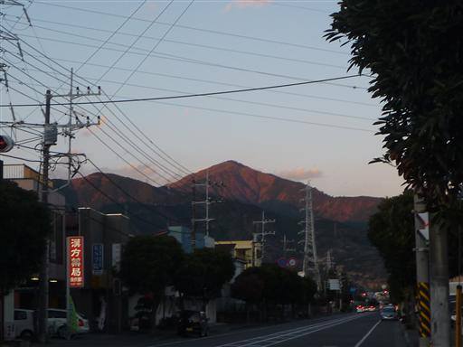